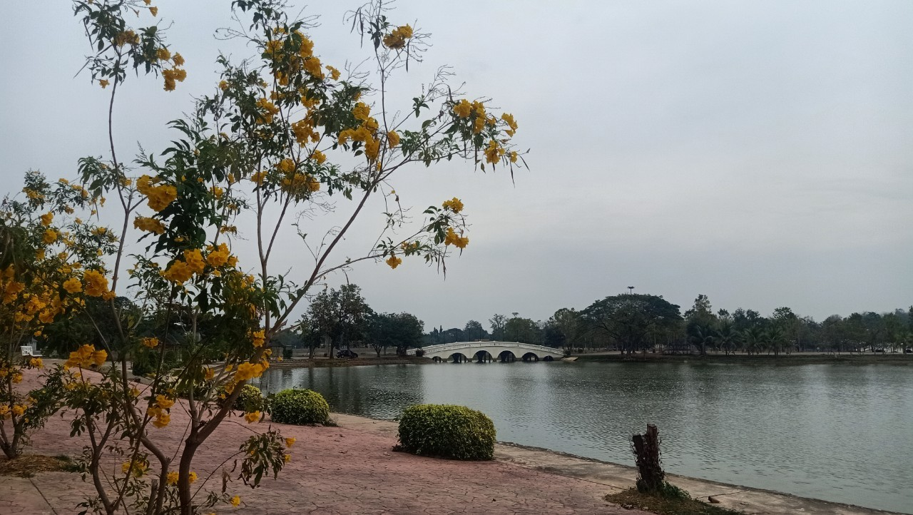
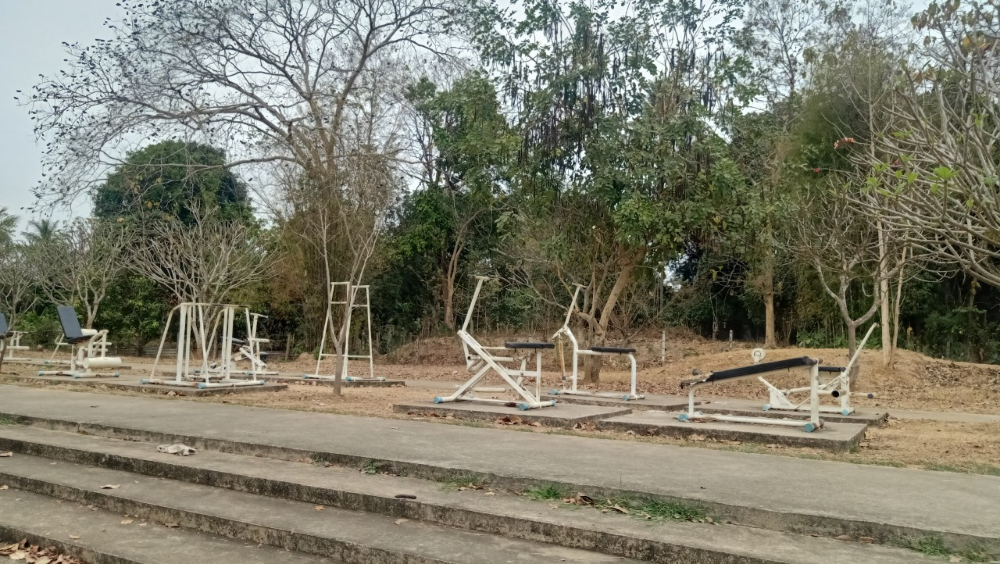
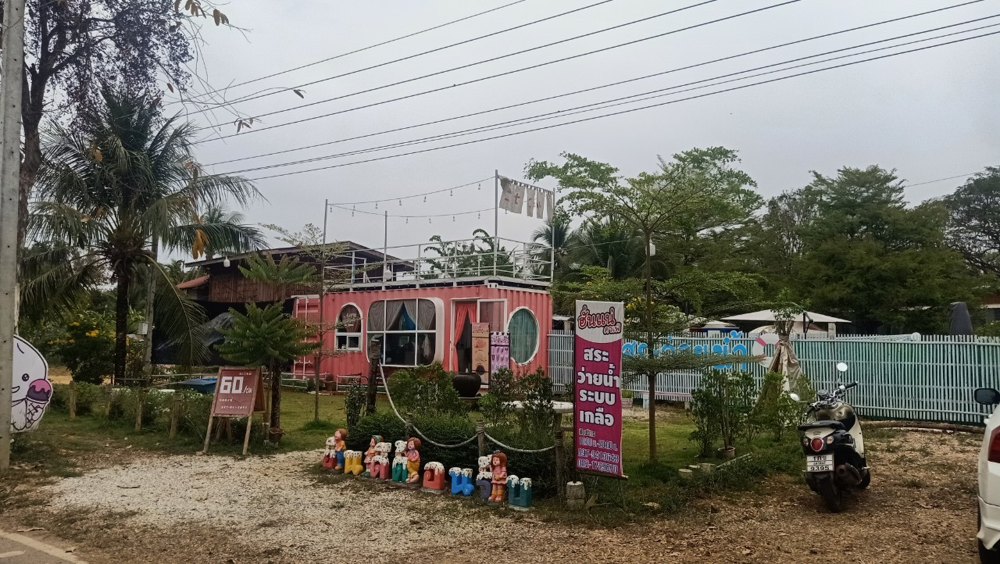
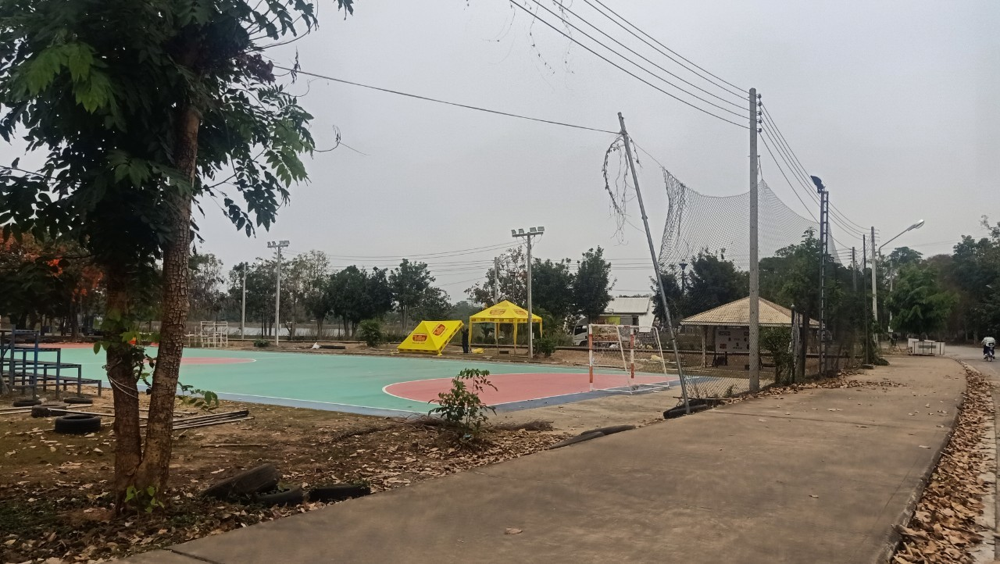

สถานที่พักผ่อนและแหล่งเรียนรู้ในอุตรดิตถ์


สถานที่พักผ่อนและแหล่งเรียนรู้ในอุตรดิตถ์
สวนสาธารณะหนองพระแล
หนองพระแลเป็นสวนสาธารณะของจังหวัดอุตรดิตถ์ ห่างจากตัวเมือง 13 กิโลเมตร หนองพระแลมีเอกลักษณ์ในตัวที่น่าสนใจก็คือมีแหล่งน้ำธรรมชาติขนาดใหญ่และมีปลาหลากหลายสายพันธุ์ เป็นสถานที่ยอดฮิตของจังหวัดอุตรดิตถ์ บรรยากาศรมรื่น เหมาะกับการเที่ยววันหยุด สวนสาธารณะหนองพระแลของเราจะมีกิจกรรมให้นักท่องเที่ยวได้ทำเยอะแยะมากมาย กิจกรรมที่น่าสนใจ เช่น บริการเช่าจักรยานหรือเรือเป็ด การให้อาหารปลา มีสวนเด็กเล่นและเครื่องเล่นอีกมากมาย สำหรับคนรักสุขภาพก็จะมีเครื่องออกกำลังกาย มีจักรยานให้ปั่น และมีกิจกรรมเต้นแอโรบิคตอนเย็น ในทุกวันวันอาทิตย์ก็จะจัดงานถนนคนเดิน เราสามารถซื้อของมานั่งรับประทานได้ และยังมีที่นั่งสุดแสนจะพิเศษนั่นก็คือ “ขันโตก”ที่น่ารักมากๆ เปิดให้บริการทุกวัน ตั้งแต่ 07.00-18.00น ที่อยู่ เทศบาลตำบลทุ่งยั้ง อำเภอลับแล จังหวัดอุตรดิตถ์ 53210

หนองพระแลอุตรดิตถ์ที่มีขนาดกว้างใหญ่มีสะพานตัดผ่านถนนที่เรียงกันเป็นขอบวงกลมพร้อมกับทิวทัศน์ต้นไม้สูงใหญ่ที่ให้ร่มเงาเรียงรายรอบขอบของหนองพระเเล

เครื่องมือออกกำลังกายที่ตั้งอยู่ท่ามกลางสวนทุ่งหญ้าสีเขียวขจีขนาดไร่กว่าๆที่มีลมพัดผ่านช่วยเพิ่มความเพลิดเพลินในการออกกำลังกายของผู้ที่มาเยี่ยมเยือน


ในส่วนหนึ่งของหนองพระแลจะมีสนามกีฬาขนาดใหญ่ ที่มักจะมีเด็กๆแถวนั้นมาเตะบอลกันบ่อยๆในช่วงเย็นของทุกๆวัน

ภายในบริเวณหนองพระแล มีร้านอาหารและร้านขายของชำอยูหลายร้านตามจุดต่างๆ มีอาหารปลาจำหน่าย และในวันเสาร์ตอนช่วงเย็นจะมีถนนคนเดินขนาดย่อม มีร้านค้ามาตั้งมากมาย